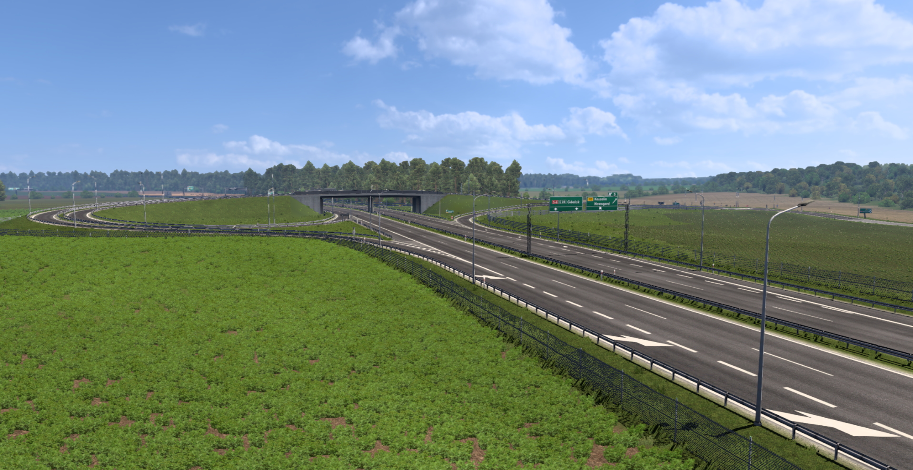
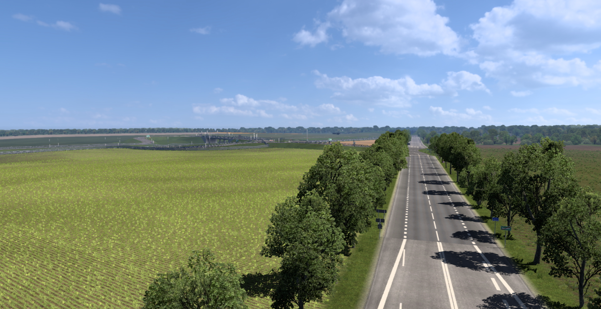
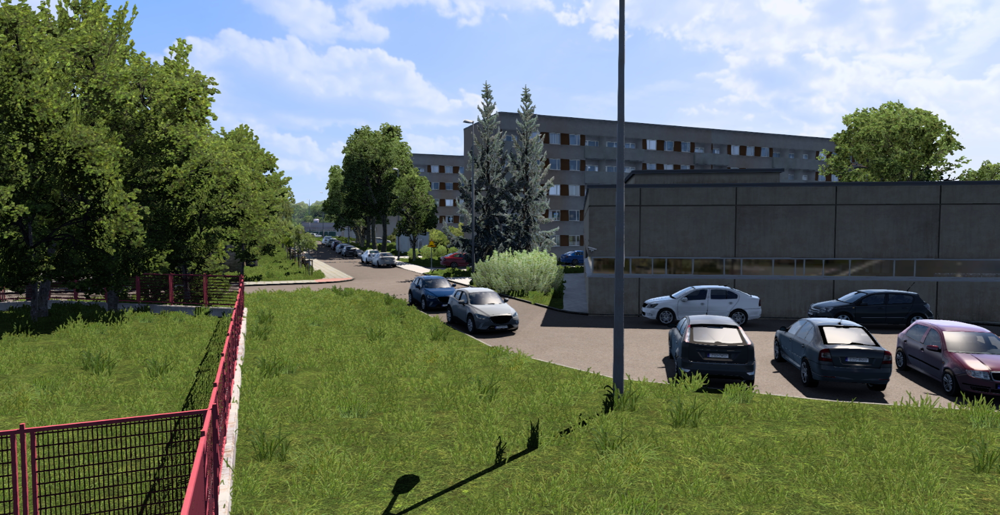
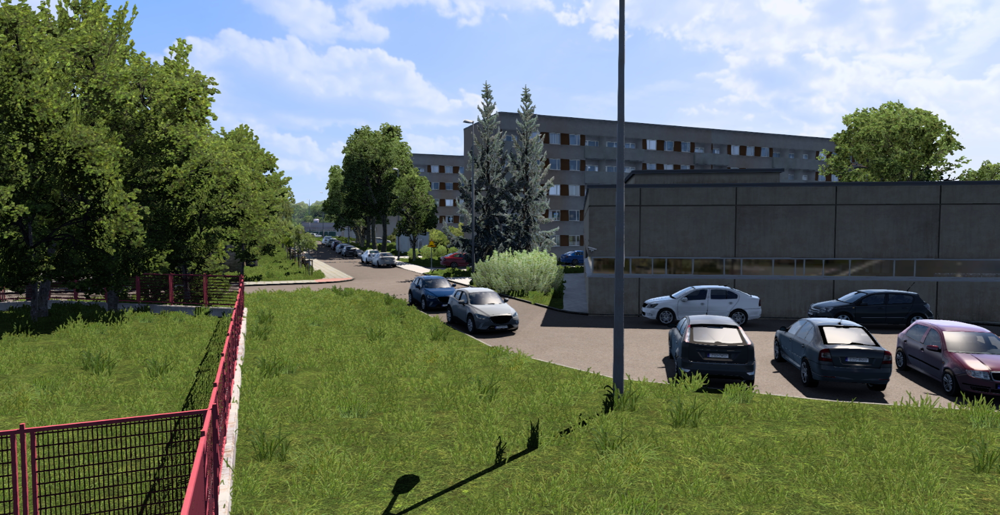

S6 Addon 2
S6 Addon 2W tej aktualizacji doszło do przebudowy S6 pomiędzy Goleniowem a węzłem Bielice, węzłem Koszalin Wschód a Sianów Zachód. Odświeżono obwodnice Słupska oraz DK6 pomiędzy Koszalinem i Słupskiem.
Otwarta została też S11 Koszalin - Bobolice.
Przebudowie uległy także:
- DW102 od węzła Kołobrzeg Wschód do Dziwnówka z przebudową części Dziwnówka
- DW112 od skrzyżowania z DW163 do Nowogardu
- DW163 od skrzyżowania z DW112 do węzła Kołobrzeg Wschód
- Połczyn - Zdrój
- Odświeżenie placu w Biesiekierzu
Zaktualizowano remonty, m. in. budowa S6 Sianów - Słupsk
Ta aktualizacja prawdopodobnie będzie ostanią dużą aktualizacją. Plany na rozbudowę mam (DW167, DW172, Mielno), jednak są one mniej ważne do wykonania. Na ten moment wprowadzam przerwę w edytowaniu, na jak długo, to się okaże.
Dzięki za tą długą przygodę, która trwa prawie 4 lata!
Roldzik
 
 
